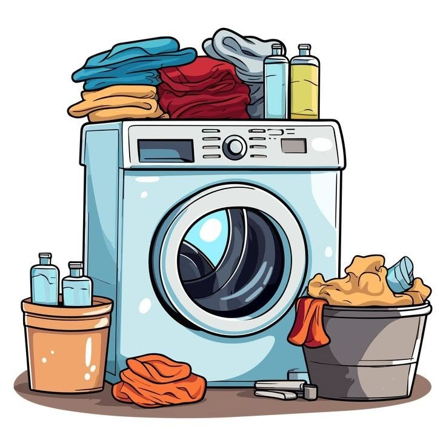
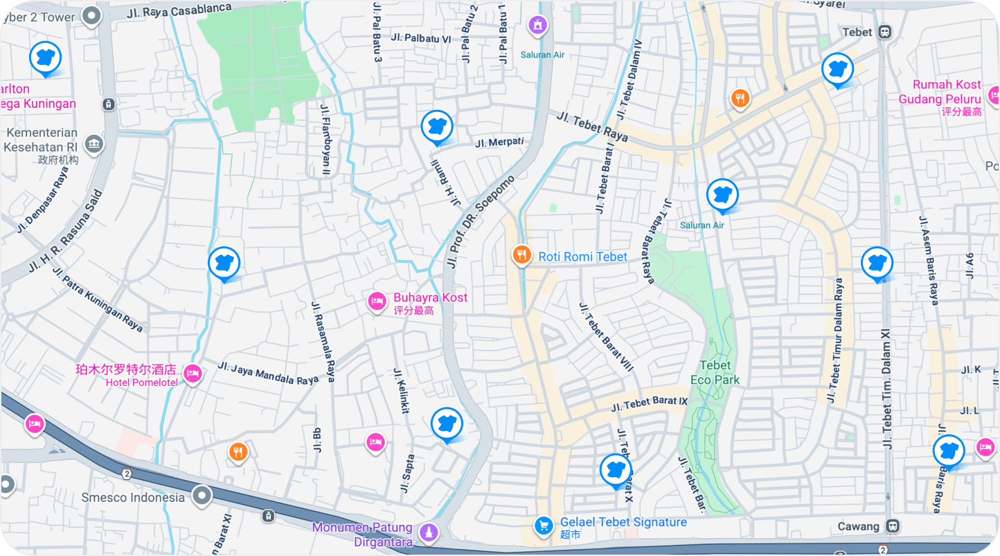

Laundry kiloan, bersih dan wangi
Cucian Bersih dan Wangi, Selesai Tepat Waktu
Laundry kiloan, express, dan satuan untuk kebutuhan harian Anda. Pesan cukup lewat WhatsApp. (Data simulasi)
Pesan via WhatsApp Lihat layanan

Cara Pesan
-
Kirim cucian
Pesan lewat WhatsApp atau antar langsung ke toko.
-
Timbang dan konfirmasi
Cucian ditimbang dan harga dikonfirmasi.
-
Antar atau ambil
Cucian diantar atau diambil kembali sesuai jadwal.
Kata Pelanggan
“Cepat dan wangi, cucian kuliah jadi tidak pernah telat.”
“Harga jelas dan sepatu saya kembali seperti baru.”
“Tinggal chat WhatsApp, cucian diantar sore harinya.”
Informasi dan Kontak
Jam buka: Senin-Sabtu, 08.00-20.00 (simulasi)
Alamat: Jl. Margonda No. 99, Depok (alamat simulasi)
WhatsApp: 0898-7651-874 (contoh)
